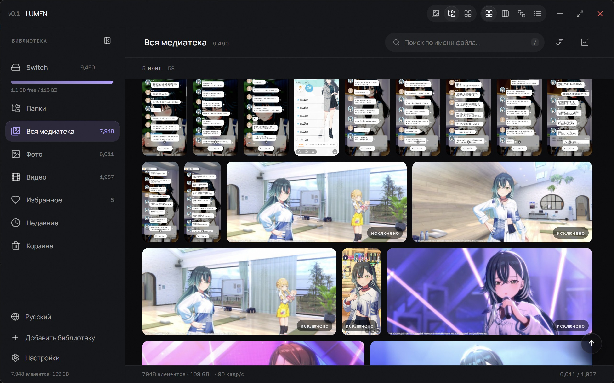

Открывается сразу
Даже если файлов десятки тысяч. Превью строятся один раз в фоне, и при следующем запуске всё уже на месте.
Для Windows 10 и 11
LUMEN превращает уже существующие папки на компьютере в спокойную и быструю галерею. Ничего не загружается, не импортируется и не перемещается — программа просто показывает то, что у вас есть.
Бесплатно · без аккаунта · без рекламы · открытый код

Большинство приложений для фото хотят видеть вашу библиотеку в облаке. LUMEN просто просит папки, которые у вас уже есть.
Даже если файлов десятки тысяч. Превью строятся один раз в фоне, и при следующем запуске всё уже на месте.
Ни аккаунта, ни облака, ни загрузок, ни рекламы. Программа вообще не выходит в интернет, если вы сами не попросите открыть ссылку.
Фотографии открываются на весь экран с увеличением и перетаскиванием. Видео воспроизводится прямо в LUMEN и продолжается с того места, где вы остановились.
Сетка, плитки или простой список. Поиск по имени, сортировка по дате, избранное и размер превью на выбор.
Нажмите на любую картинку, чтобы рассмотреть её целиком. Стрелки переключают снимки.
У LUMEN нет сервера, аккаунта и аналитики. Программа читает добавленные вами папки и записывает только собственный небольшой кэш превью, поэтому оригиналы остаются нетронутыми. Удалите LUMEN — и всё, что он создал, исчезнет вместе с ним.
Прочитать политику конфиденциальностиОдин установщик для Windows 10 и 11, 64-бит. Бесплатно, и так и останется.
Нет. У LUMEN нет ни облака, ни онлайн-аккаунта. Снимки остаются на компьютере, и программа работает так же с выключенным интернетом.
Нет. LUMEN только читает ваши папки. Если вы удалите что-то прямо из галереи, файл отправится в корзину Windows, откуда его можно вернуть как обычно.
Установщик пока не подписан платным сертификатом, поэтому SmartScreen спрашивает один раз. Выберите Подробнее → Выполнить в любом случае — или дождитесь версии в Microsoft Store.
Пока нет. LUMEN создан только для Windows.